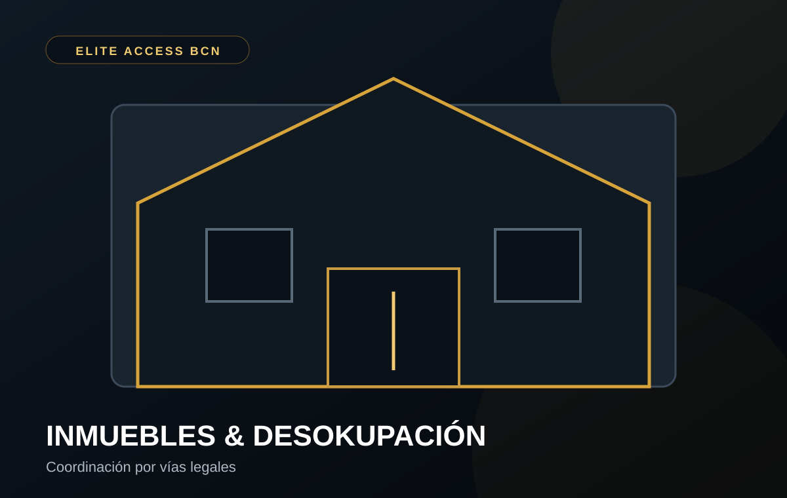

Propietarios · Gestión de inmuebles
Coordinación para afrontar incidencias inmobiliarias por vías legales.
Estudiamos la información inicial y orientamos la coordinación con profesionales competentes, según la situación concreta.

Proceso responsable
Primero se analiza el caso.
Cada situación requiere revisar la documentación disponible y determinar qué vía legal puede resultar adecuada. No se garantiza un resultado ni un plazo de recuperación.
✓Recogida inicial de información del inmueble.
✓Coordinación con profesionales jurídicos cuando corresponda.
✓Organización de comunicaciones y documentación disponible.
✓Coordinación con autoridades competentes cuando proceda.
Límites claros
No realizamos desalojos por la fuerza, amenazas, coacciones, intimidación, cortes de suministros, cambio de cerraduras para forzar una salida ni entradas no autorizadas. Las actuaciones deben respetar la ley y los derechos de las personas implicadas.
¿Para quién?
- Propietarios particulares y empresas.
- Comunidades y administradores de fincas.
- Gestores patrimoniales e inversores.
El primer contacto no sustituye al asesoramiento jurídico ni garantiza la viabilidad de una actuación.
Explicar la situación